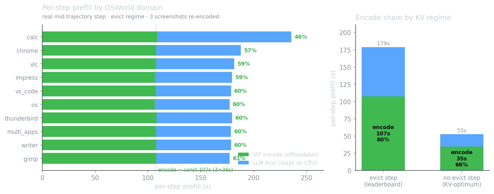

The Holo3 / OSWorld run is served entirely on one Intel Panther Lake NUC (Core Ultra 7 356H,
96 GB unified, Xe3 iGPU, NPU 5). It is prefill-bound: ~89% of compute time is prompt
processing, not generation. Two levers were measured against that wall — (1) managing the KV cache so the
prefill stops being re-done every step, and (2) offloading to the iGPU / spending the 96 GB. All
numbers below are measured on the live machine (llama.cpp b9535, Holo3-35B-A3B i1-Q4_K_M).
Headline. The prefill wall is quadratic in steps — an artifact of how the agent edits its own context, not of the model or the hardware. Making the conversation append-only turns it linear (a 4–10× prefill reduction, runtime-agnostic), and it is affordable precisely because of the 96 GB: this hybrid model keeps only 10 of 40 layers in the position-indexed KV cache, so its full 262K-token context costs only ~5 GB of KV — the box can simply never evict. The iGPU, separately, is 2.5× faster at prefill but is blocked by two concrete correctness bugs, so CPU remains the fastest correct path today.
Each agent step sends a screenshot and the model emits a short action (a JSON tool call). Decode is tiny (~280 tokens/step); the cost is prompt processing. With a working prefix cache, step N should reuse step N−1's KV and prefill only the new tokens. It does not — and the per-step trace of one 100-step task shows exactly why:
| step | prompt total | KV reused (cache_n) | re-prefilled | reuse |
|---|---|---|---|---|
| 2 | 5,233 | 3,003 | 2,230 | 0.57 |
| 3 | 7,479 | 5,229 | 2,250 | 0.70 |
| 4 | 7,688 | 947 | 6,741 | 0.12 |
| 50 | 17,233 | 947 | 16,286 | 0.055 |
| 100 | 27,246 | 947 | 26,299 | 0.035 |
From step 4 onward, cache_n is frozen at exactly 947 — the static system+tools preamble — while
the prompt grows to 27k. Reuse decays as 947 / total. The cause is in the agent loop: to honor
H Company's max_images=3 budget, older screenshots are rewritten in place to the text
"[screenshot evicted]". In a causal transformer, mutating a token that sits early in the context
invalidates the KV of everything after it — so the longest reusable prefix collapses back to the 947-token
preamble that precedes the first screenshot, every step.
The real shape of the cost. Because the whole suffix is re-prefilled each step, total prefill over a task is Σ(re-prefilled) ≈ a 100-step task pays for ~1.6M prefilled tokens — quadratic in step count. One screenshot alone is ~2,014 tokens, so the context fills fast and the per-step bill keeps climbing (from ~75 s early to 400 s+ on CPU as the context fills — the ~7.7 min/step seen on cap-bound tasks). Across 113 scored tasks, model inference is 98% of wall-clock; ~89% of that is prefill. This is the single biggest latency lever.
In the timeline style of OSWorld-Human (Abhyankar, Qi & Zhang),
here is one real successful OSWorld task (chrome, 8 steps, score 1.0) decomposed per step into
prefill, decode, and action. OSWorld-Human reports that "each
successive step can take 3× longer than steps at the beginning of a task" — that is exactly what the top track
shows, and the cause here is mechanical: at step 4 the 3-screenshot eviction breaks the KV prefix, so prefill
triples (≈59 s → ≈175 s) and never recovers.
And within that prefill, where does the time actually go? Measured per-operation (every ggml node
timed via llama.cpp's cb_eval hook): the step is FFN/MoE-bound when context is
short, but the attention core grows linearly with depth and overtakes FFN/MoE at
L ≈ 13.6k tokens — see the measured stacked-area breakdown in
where prefill time actually goes (and the
method: what was built, run, and verified).
prefill (prompt processing, incl. screenshot encode) decode (reasoning + action) action (VM execution)
Prefill is 89% of model time here (1,048 s of 1,200 s). The lower track projects the append-only KV-stable case, where steps 4–8 prefill only the ~2k-token delta instead of re-processing the whole window: the task contracts ~1.9× (1,200→622 s) and the per-step cliff disappears. (The terminal-slot scheme of §2b instead holds prefill at a constant ~6k/step — a smaller win on an 8-step task like this, but the decisive one on long, high-step tasks where today's re-prefill balloons to 27k.) Unlike OSWorld-Human's multi-module agents (where separate planning / reflection / judging model calls dominate), Holo3 is one model call per step — so the whole latency is a single prefill+decode, and KV-cache management is the latency lever.
The model is qwen3_5_moe — a hybrid: of its 40 layers, only the 10 full-attention layers
hold a position-indexed KV cache; the other 30 are Gated-DeltaNet / linear-attention layers carrying an
O(1) recurrent state (one running summary per sequence, not per-token KV). That single fact reshapes every option.
Option A — --cache-reuse (KV-shift the reusable prefix): ruled out
Verified inert in llama.cpp source. It is disabled at startup because the model is multimodal
(server-context.cpp:997) and refused per-request because every prompt carries image tokens
(:2716, can_cache_reuse = can_shift && !has_mtmd). Even text-only it
would be unsound: the hybrid memory reports can_shift=true by delegating to its attention half
(llama-memory-hybrid.cpp:133), but the recurrent seq_add only bumps a single
tail-cell's position (llama-memory-recurrent.cpp:304) — it cannot reconstruct a
gapped-prefix running state, so it would silently corrupt 30 of 40 layers. KV-shift is meaningful only for the 10
attention layers.
Option B — append-only context, never evict: the lever The collapse is self-inflicted by the in-place eviction. If the history is append-only — old screenshots stay where they are, each step only adds the new screenshot + action — the prefix stays byte-identical and the KV (attention and recurrent state) is reused. Per-step prefill drops from the 8–27k re-prefill to the ~2k-token delta; total prefill goes from quadratic to linear (~200k vs ~1.6M tokens on a 100-step task): a 4–10× cut, on CPU, no new hardware.
Why 96 GB is what unlocks it. Append-only means the context can grow to a whole task (~2k tok/step × 100 ≈ 200k tokens). Holo3 supports 262K. The usual objection is KV memory — but here only 10/40 layers are cached, so a full 262K window is ~5 GB of KV, not tens of GB. The 96 GB unified pool holds the 20 GB weights + a 262K context + the OSWorld VM with room to spare, so the agent can simply never evict for any OSWorld task. The memory budget is what converts "stop evicting" from impossible to free.
The honest caveat. max_images=3 is H Company's documented protocol — the
80.4%-leaderboard config. Keeping every screenshot deviates from it, so the accuracy effect (does Holo3 do as well,
better, or worse with a long visual history?) is an open A/B question, not a settled win. The current run is
a pure replication and is left untouched; this is the next-run experiment. Cheaper variants on the same axis:
lower screenshot resolution (fewer image tokens), or summarize-then-drop old turns at a stable boundary instead of
mutating them — both trade fidelity for prefill and both need the same A/B.
A sharper idea than "never evict": lay the prompt out as [preamble][img-slot-1][img-slot-2][img-slot-3][text]
and each step swap the oldest screenshot out of its slot, prefilling only the new image + appended text while
reusing the rest of the KV. On a standard transformer this is a real, published technique — at a measured cost:
| method | mechanism | recompute | quality cost |
|---|---|---|---|
| Prompt Cache (MLSys'24) | position-anchored modules; mask cross-attention | 0% | <1 pt (if self-contained) |
| CacheBlend (EuroSys'25) | recompute high-deviation tokens | 5–18% | ~0.01 F1 |
| EPIC | recompute chunk-boundary tokens (LegoLink) | ~16–20 tok | 0–7% |
But the literal "swap a middle slot" version is blocked on this model. Holo3 is
hybrid: 30 of 40 layers are Gated-DeltaNet with a sequential recurrent state
(st = st-1·gt + kt·dt). Editing a token at position p
invalidates every state after p, with no per-token KV to splice — and since the evicted screenshot sits
near the front, a middle-swap re-scans ~the whole suffix (today's cost). Causal attention adds the same staleness on
the 10 full-attention layers. (This is also why --cache-reuse / KV-shift is unsound here.)
The twist that makes it work — losslessly. The same strict causality cuts both
ways: a state snapshot at position p is an exact summary of the prefix [0..p]. So put the ≤3 screenshots at the
END, checkpoint the full state (attention KV + recurrent ssm/conv) at the image-region start, and each step
restore the checkpoint and re-prefill only the current image window (~6k tokens, constant) — exact for all 40
layers, not approximate. llama.cpp already ships this: --ctx-checkpoints (on by default, n=32) with
llama_state_seq_get/set_data_ext(PARTIAL_ONLY) serializing the recurrent state
(server-context.cpp:2033, llama-memory-recurrent.cpp:864). No model
change — agent/server orchestration only. The forced corrections to the idea: the slots must be terminal, and
the mechanism is checkpoint-restore, not KV-pointer-swap.
So the instinct ("only compute the swapped-in screenshot") is right. Terminal slots keep the 3-image count
(close to the model's training regime) at a constant ~6k-tok/step with bounded memory; append-only is cheaper
(~2k/step) but keeps every image and grows context. Both reorder the prompt vs the interleaved leaderboard layout, so
both warrant an accuracy A/B. The distinction from --cache-reuse matters: checkpoint-restore replays the
full exact state, whereas KV-shift fakes token positions and silently corrupts the recurrent half.
→ Build guide. The full per-step algorithm, the
llama_state_seq_*_data_ext(PARTIAL_ONLY) / --ctx-checkpoints orchestration, the projected
numbers, and the prior-art roadmap (Prompt Cache, CacheBlend, EPIC, VLCache, GUI-KV) are written up at
the KV-cache optimum →
The premise that the accelerators are unreachable turned out to be false: the Xe3 is usable through llama.cpp's
Vulkan backend (Mesa, no intel-compute-runtime needed; OpenCL NEO and Level-Zero GPU+NPU
runtimes are in fact now installed). Raw throughput, measured at full offload:
| stage | CPU (live) | iGPU Vulkan | ratio |
|---|---|---|---|
| prefill pp512 | ~47 t/s | 124.4 | 2.6× |
| prefill pp2048 | ~47 t/s | 115.4 | 2.5× |
| prefill pp8192 | ~47 t/s | 120.7 | 2.6× |
| decode (batch 1) | 14.7 t/s | 8–10 | 0.6× |
| decode (4 concurrent) | 14.7 t/s | 16.9 agg | 1.2× |
Prefill — the bottleneck — is 2.5× faster on the iGPU (the Xe3's KHR_coopmat fp16 matrix cores
win the big GEMMs). Decode is memory-bandwidth-bound and slower at batch 1, but scales with
concurrency (B1→B4 = 8.5→16.9 t/s aggregate) — the 96 GB continuous-batching lever, which would need a
parallel runner driving the 4 server slots (sublinear, ~B2–3 on this box). On a prefill-dominated workload the net
would be ~2× end-to-end.
But it is correctness-blocked today. The 2.5× requires full offload
(-ngl 99), and on this Xe3/Vulkan stack two pieces break: (1) the 248k-vocab output projection
garbles tokens (greedy decode answers "3." for "capital of France"); (2) the vision encoder crashes
the GPU (vk::DeviceLostError in clip_image_batch_encode) — fatal, since every step needs
vision. The only correct offload (output + vision on CPU) was measured slower than CPU on every axis. So
CPU is the fastest correct path.
How narrow is the bug? llama.cpp's kernel test suite (test-backend-ops, synthetic tensors, no
model) on Vulkan0: 947/947 MUL_MAT tests pass vs the CPU reference, and the broad
sweep surfaced zero numerical failures — unimplemented ops merely report not supported → CPU
fallback. So the corruption is not a general matmul defect; it is narrow (the untested very-large
output shape, or an op fallback in the head), which makes it the kind of bug that gets fixed upstream — after
which a ~2× GPU path opens. That is a research/upstream effort, not a config flag.
Section 3 asked whether the iGPU can speed the text path (bandwidth-bound → no).
The bigger lever is the ViT vision encoder. Measuring on the live CPU server — isolating the encode by a
differential (per-step prefill minus a token-exact text baseline at the same length), cross-checked against
the server's per-image image processed log — the encode is ~36 s per
screenshot and, strikingly, content- and domain-invariant (every OSWorld screenshot is
1920×1080 → ~2030 image tokens; the encode is full ViT attention over ~8100 patches). In the
leaderboard evict regime all 3 screenshots are re-encoded each step → a near-constant
~107 s = 60% of a ~179 s step (46–61% across the 10 domains); in the
no-evict / KV-optimum regime one new screenshot is encoded → 66% of a ~53 s step.

Unlike decode, the ViT is compute-bound, not memory-bandwidth-bound — exactly what an iGPU/NPU
matrix engine is good at. So the offload that does pay off is: run the ViT on the Xe3/NPU via OpenVINO
(the SigLIP tower converts cleanly to IR and dodges the Vulkan CLIP DeviceLostError of §3), feed its
image embeddings into the llama.cpp CPU text model, and leave GDN+MoE+decode on the CPU. Encode and the
image-token eval are sequential within a step, so there is no shared-bus contention during the hand-off.
Measured on the NUC16 (Holo3-35B-A3B i1-Q4_K_M, -t 8 -tb 16); 5 screenshots ×2 reps
for the per-image figure, one real mid-trajectory step per domain for the per-domain bars.
Before the full bit-parity export, a cheap estimate: latency depends on shapes and ops, not weights, so a random-weight ViT proxy at Holo3's exact vision dims (27 layers, hidden 1152, 16 heads, MLP 4304, full SDPA attention over ~8120 patches, 2×2 merge→2048) converted to OpenVINO and run on each device gives a faithful estimate. The proxy's CPU latency (35.2 s) lands within 2% of the measured clip encode (~36 s) → the accelerator numbers are trustworthy.
| device | encode @ full-res (8120 patches) | speedup vs CPU | @ 2048 patches | note |
|---|---|---|---|---|
| CPU — Core Ultra 7 356H | 35.2 s | 1× | 5.0 s | matches measured ~36 s ✓ (proxy faithful) |
| iGPU — Xe3 | 3.3 s | 10.6× | 0.30 s | fp16 matrix cores; latency winner |
| NPU — AI Boost | 6.0 s | 5.9× | 0.30 s | runs full-res once shapes are static; draw is perf/watt; ~39 min one-time compile |
The encoder — the compute-bound ~60% of per-step prefill (§3b) — drops from ~36 s on CPU to ~3.4 s on the iGPU (10.6×) or ~6.1 s on the NPU. End-to-end, offloading just the encode takes a per-step prefill from 179 s→~82 s (≈2.2×, evict) or 53 s→~21 s (≈2.5×, KV-optimum) on the iGPU, and frees the CPU during the encode window — stacking on top of the KV-cache lever. The iGPU wins on latency; the NPU is comparable at small sizes and its real draw is energy (perf/watt), which a power measurement would quantify next. Caveat: this is a latency proxy — it does not model weights, preprocessing, or the deepstack/merger projector, and bit-parity correctness is the real export. Energy not yet measured.
| lever | uses 96 GB? | expected | status |
|---|---|---|---|
| Append-only / KV-stable context | yes (262K ctx ≈ 5 GB KV) | 4–10× prefill, runtime-agnostic | next-run A/B (accuracy) |
| Terminal slots + state checkpoint | yes (bounded 3-img KV) | constant ~6k/step (vs 8–27k) | buildable now (--ctx-checkpoints); A/B |
--cache-reuse | — | — | ruled out (inert + unsound) |
| iGPU Vulkan offload | weights+KV in unified mem | ~2× end-to-end | blocked (2 kernel bugs) |
| Vision-encoder offload (ViT→iGPU/NPU, OpenVINO) | accelerator runs the ViT | encode 10.6× (iGPU) → ~2.2–2.5× step | 0a/0b pass; est'd §3c; export = next |
| Continuous batching | yes (4× context) | ~1.8–2.5× throughput (B2–3) | needs parallel runner |
The actionable, hardware-agnostic win is KV-cache management: the OSWorld prefill wall is a quadratic artifact of in-place screenshot eviction, and the 96 GB unified memory — combined with the hybrid model's tiny KV footprint — makes an append-only, never-evict context affordable, turning the wall linear. The iGPU has the throughput to add a further ~2×, gated on two specific, now-localized llama.cpp/Mesa correctness bugs. Measured on the live NUC16 run; the replication itself is left untouched.